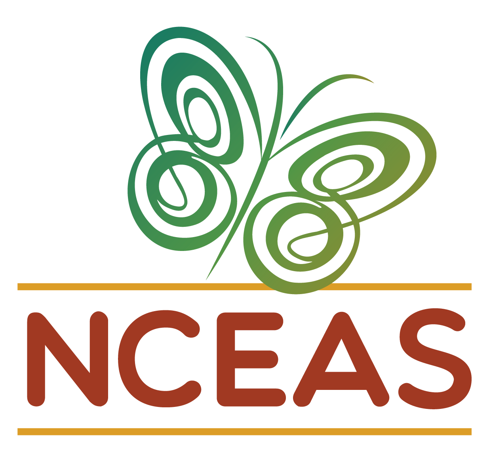

my_path <- "path/to/my/file/"
my_path[1] "path/to/my/file/"
This page contains the collected best practice tips of the NCEAS Scientific Computing Support Team. More will be added over time and feel free to post an issue if you have a specific request for a section to add to this document.
Please feel free to reach out to our team (see here) if you have any questions about this best practices manual and/or need help implementing some of this content.
Check the headings below or in the table of contents on the right of this page to see which tips and tricks we have included so far and we hope this page is a useful resource to you and your team!
At NCEAS we are almost exclusively working on collaborative projects where we synthesize existing data to draw larger inferences than any single data set would allow. Because of this, we strongly recommend that each tool used by a team accomplish as many purposes as possible to avoid a project accruing endless “one off” tools that fit a specific purpose but do not accomplish any other tasks. Streamlining your workflow to just a few broadly useful programs also helps train new team members and ensure that within team protocols are clear and concise to follow.
The analytical software options available at NCEAS follow directly from this ethos. Although occasionally providing specialty programs (upon request), we have otherwise carefully assembled a powerful lineup of scripted, cross-platform, scalable applications that are well-supported, generate robust results, and permit batch processing. Although these packages require an initial time investment to learn, and may seem intimidating to scientists familiar with only “point-and-click” software, we strongly argue that the long-term payoff is well worth the time investment at the start.
We strongly recommend that you use GitHub both for its capability to visualize version control with git and for its broader value as an integrated project management system.
General Analytical Software
Spatial Analytical Software
Relational Databases
Code Versioning
git
git (similarly to R versus RStudio, you can use git without GitHub but GitHub contains several quality of life improvements and additional functionalities)Servers
This section contains our recommendations for handling file paths on NCEAS analytical server. When sharing code collaboratively (e.g., with GitHub) managing the difference between your folder structure and those of your colleagues can be tackled in a variety of ways. Failing to account for this can result in annoying errors where content is either not read in successfully or is exported to the wrong folder. For content inside your working directory, we recommend using relative paths. However sometimes you need to read files from folders that are outside your working directory, for example large datasets shared among your team members.
Below are our recommendations for file path management in a team context; we hope they help!
First and foremost, we recommend that you begin each script (just after loading your libraries) by saving all the paths to your files as objects. This makes it easy for each new user to remember that they might need to alter those objects so that data are read in and saved out to the appropriate places.
file.path() to Make Path Objectsfile.path() is a useful base R function that automatically accounts for the fact that Mac and PC operating systems use different slashes between folder names to indicate a path (one uses ‘/’ and the other uses ‘\’)
Note that while you could use paste(..., sep = '/') instead, it does not account for the different slash between Mac and PC so file.path() is preferable.
Now that you’ve saved your paths as objects using file.path() to account for operating system differences, you should use them during import/export steps! To do this, just wrap the argument (i.e., part of the function) that deals with the file name/path in another call to file.path() with the object you created earlier and the name of the file to import/export. See below for two examples:
We strongly recommend preserving your file paths as objects at the start of your scripts (using file.path()) to ensure that your scripts can be shared as easily as possible among your team without issues due to user-specific folder names or computer operating system interrupting the work that you set out to do.
Loading packages / libraries in R can be cumbersome when working collaboratively because there is no guarantee that you all have the same packages installed. While you could comment-out an install.packages() line for every package you need for a given script, we recommend using the R package librarian to greatly simplify this process!
librarian::shelf() accepts the names of all of the packages–either CRAN or GitHub–installs those that are missing in that particular R session and then attaches all of them. See below for an example:
To load packages typically you’d have something like the following in your script:
With librarian::shelf() however this becomes much cleaner!
When using librarian::shelf(), package names do not need to be quoted and GitHub packages can be installed without the additional steps of installing the devtools package and using devtools::install_github() instead of install.packages().